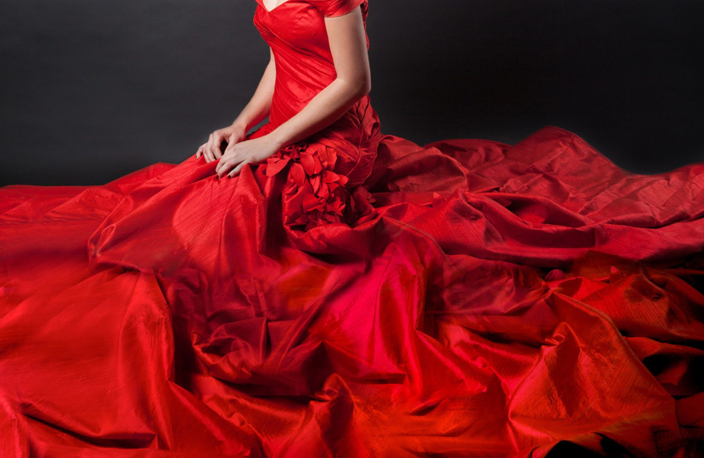
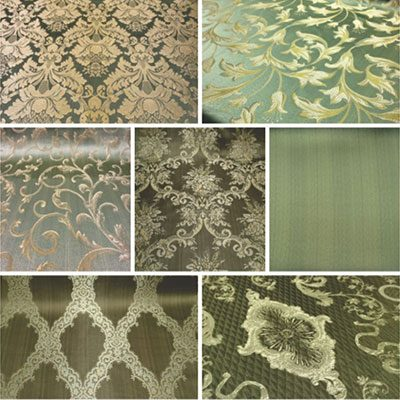
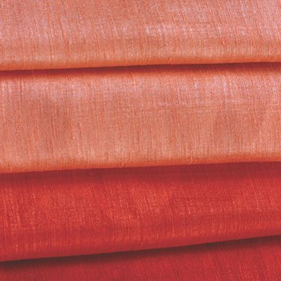
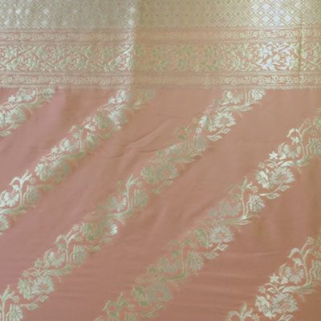
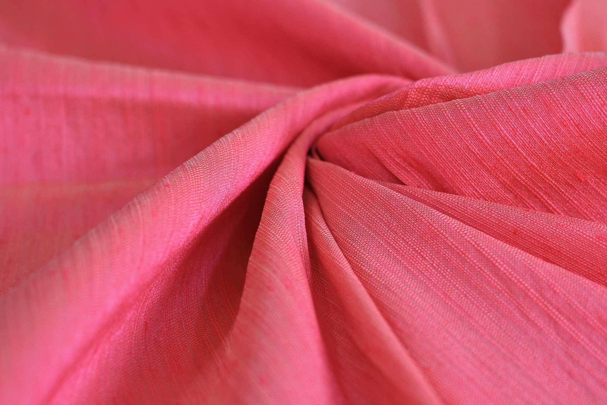
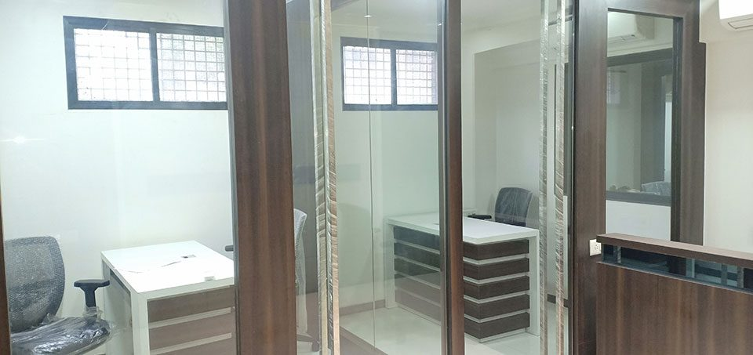
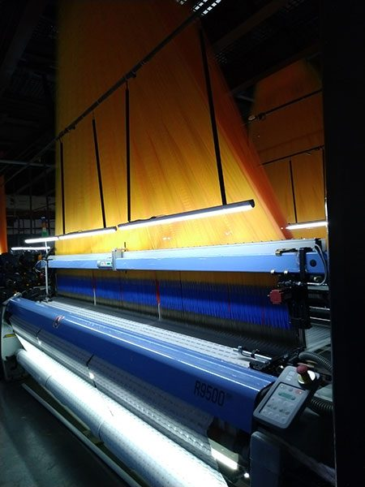
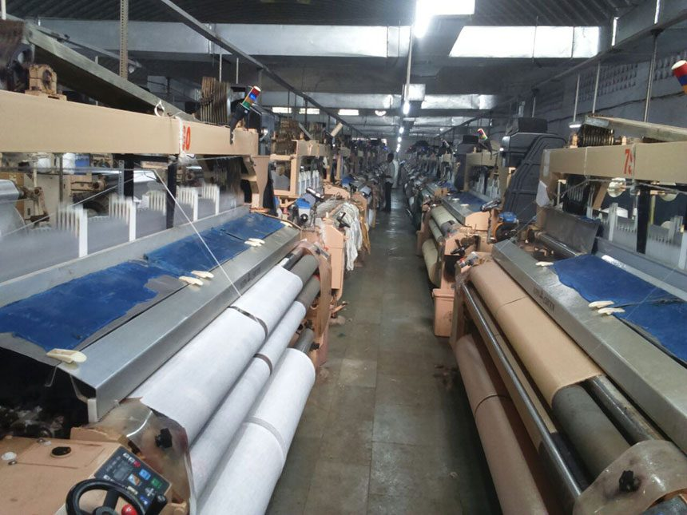
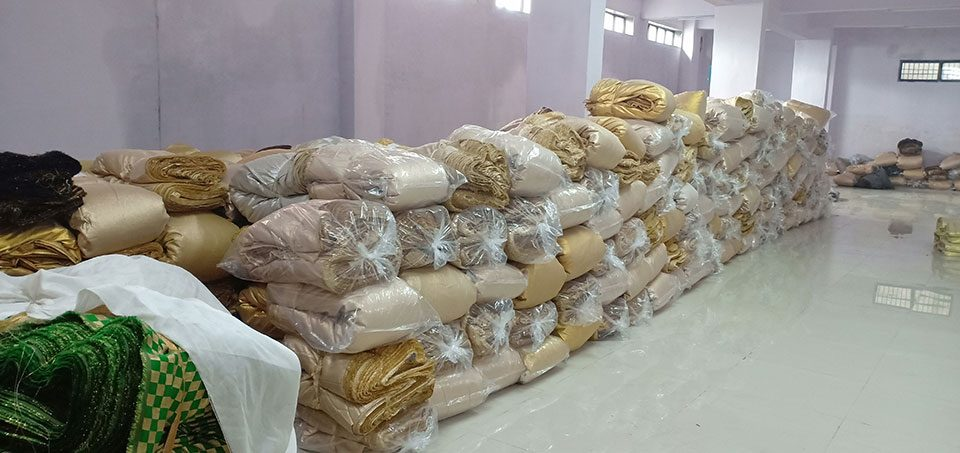

Foundation
We start out in Surat, India's textile capital, making shirting fabric.
Ruchi Twisters Pvt. Ltd. · Surat, India
18M+ metres / year
We design and weave fabric for garment makers and traders in India and overseas. Plain wovens, dobbies, jacquards, sarees and dupattas, more than 18 million metres of it every year.
Scroll
Silk · Fall · Lustre
The group at a glance
▶ Company film
A short film on how we work, from our looms in Surat to the garment makers and fabric wholesalers we supply in India and abroad.
01 Our story

Ruchi Group started in Surat in 1985 making shirting fabric. That was the whole business, and we set out to do it properly. Today we also make dress materials, sarees and home furnishing textiles, on modern looms, with our own team of designers, artists and production staff.
“ Our resolution to keep striving hard to deliver quality finished goods with versatile designs is the secret to our achievement.
That habit is what grew a single-product mill into an integrated fabric house. Today vendors in India and abroad rely on us for consistent quality, fresh design and dependable capacity.
02 The journey
We start out in Surat, India's textile capital, making shirting fabric.
We move into dress materials, sarees and home furnishing textiles.
We bring in modern jacquard and dobby looms and build our own design studio.
One integrated operation, from design to dispatch, producing over 18 million metres a year.
03 What we make
01 / 05
Our foundation fabric. Clean and versatile, made in large volumes for shirting, kurtas and everyday garments, with the same quality from the first roll to the last.

Self-designed weaves that change how a fabric feels, falls and catches the light, with no printing at all. Small, understated patterns for menswear and womenswear.
Ornamental weaving for borders, laces and garment detailing, in all-over or panel layouts. A single design can carry up to eight colours.
Art-silk jacquards on silk, raw silk, organza and viscose bases, drawing on Banarasi, Kanjivaram and Paithani traditions.

Fancy jacquard dupattas in dyeable and top-dyed versions, designed to finish an outfit, not just go with it.
04 Up close
Weave, weight, fall and sheen are what set a good fabric apart, and you only really see them up close. Move your pointer across the swatch to look at the weave.

05 How it's made
Design, weaving, finishing and dispatch all happen in-house. That's how we keep quality steady from the first metre to the eighteen millionth.




Every new range starts here. Our designers and artists work out the weaves, motifs and colourways buyers will be asking for next season.
Patterns are set on modern jacquard and dobby looms, thread by thread, with up to eight colours in a single fabric.
Every roll is checked for weave, weight and colour before it carries the Ruchi name.
Finished fabric is sorted and stored in our own warehouse at Pandesara GIDC, ready to ship at short notice.
06 Why Ruchi
We hold our own output to a higher standard than the brief asks for.
New designs, new bases and new finishes, season after season.
Consistency across the run, not just in the sample.
We want the relationship to last longer than the order.
We treat textiles as a craft, not just a production line.
We stand behind what leaves our floor.
Our purpose
To build confidence & spread happiness among people by making them fashionable, thus providing a platform for growth.
07 Leadership
Director's message
At Ruchi Group, we pride ourselves on revolutionising the idea of stylish, affordable clothing, matching deep product knowledge with a genuine appetite to innovate.
We believe in strong in-house partnerships across weaving, designing, supply and marketing, working continuously to earn our place as a trusted textile partner.
Director, Ruchi Group
CEO's message
The textile industry has changed dramatically over the years we've operated in it, and we've worked hard to keep our goals and designs aligned with that pace of change.
Our philosophy has always put the customer first. Demand Excellence, Continuous Innovation, Superior Quality, Customer Satisfaction, Passion & Commitment, and Accountability remain the pillars behind every metre we manufacture.
CEO, Ruchi Group
08 Gallery
09 Get in touch
Tell us what you need, whether that's dress material, a saree base, a shirting range or something new, and our team will get back to you.